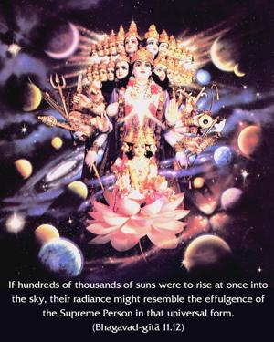
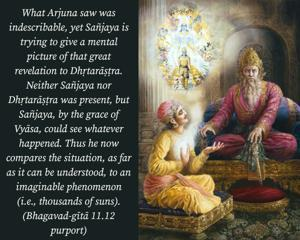

If hundreds of thousands of suns were to rise at once into the sky, their radiance might resemble the effulgence of the Supreme Person in that universal form.


What Arjuna saw was indescribable, yet Sañjaya is trying to give a mental picture of that great revelation to Dhṛtarāṣṭra. Neither Sañjaya nor Dhṛtarāṣṭra was present, but Sañjaya, by the grace of Vyāsa, could see whatever happened. Thus he now compares the situation, as far as it can be understood, to an imaginable phenomenon (i.e., thousands of suns).